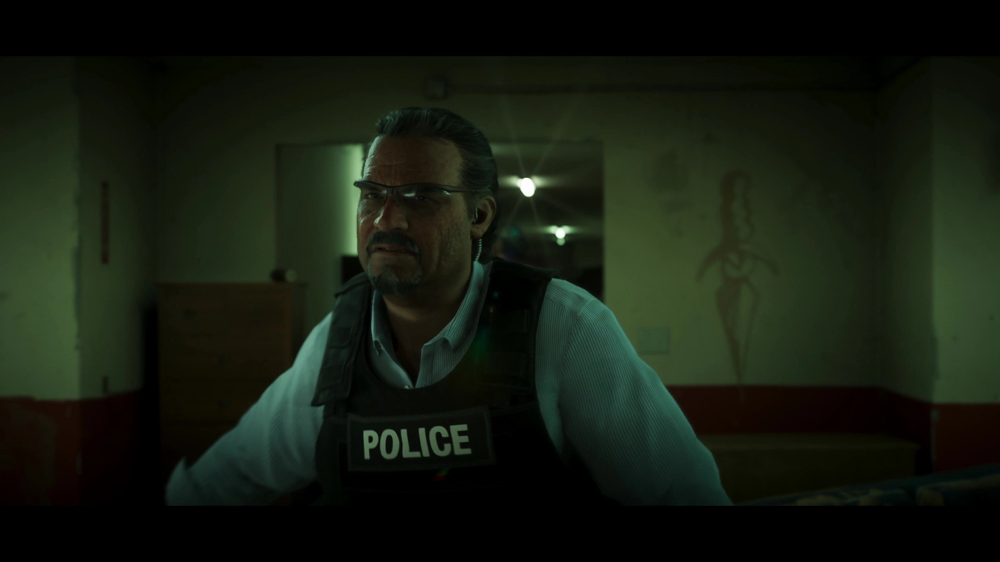

📸 Imagem: Rockstar Games
SISTEMA POLICIAL
Polícia poderá reunir provas contra Jason e Lucia
Em GTA VI, as autoridades poderão identificar roupas, veículos, armas e até imagens de câmeras de segurança. Os protagonistas precisarão encontrar maneiras de escapar das investigações.